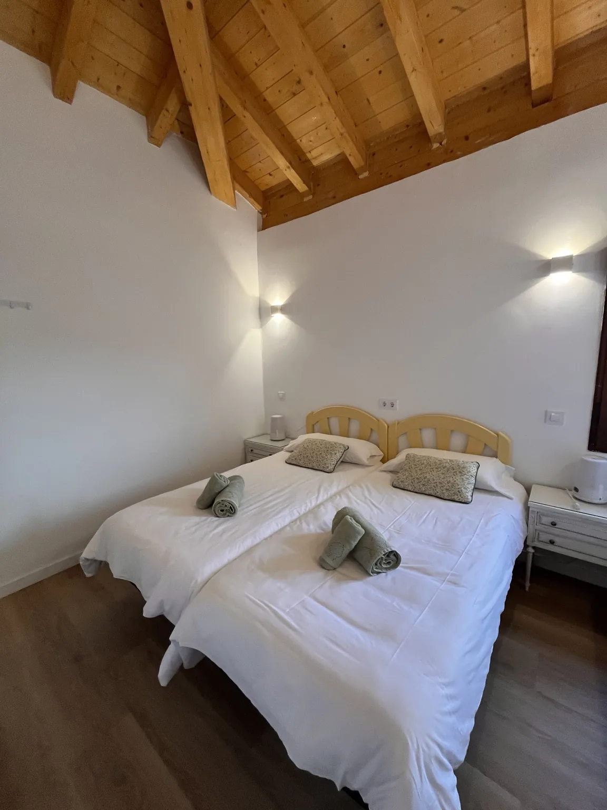

Limpieza
Cambios entre estancias, limpieza de temporada o preparación antes de tu llegada.
- Cocina, baños y estancias
- Preparación de camas
- Revisión final de la vivienda
Si llevas tus reservas o solo necesitas apoyo con una tarea, puedes contar con nosotros por separado.
Cuéntanos qué necesitasLastres · Colunga · Caravia y alrededores

Cada servicio se puede contratar de forma puntual o con una frecuencia acordada.
Cambios entre estancias, limpieza de temporada o preparación antes de tu llegada.
La ropa lista para el siguiente huésped o para tu próxima visita.
Apoyo local cuando tú no puedes estar.
Los detalles que ayudan a que la casa esté lista.
Alguien cerca para abrir, comprobar y contarte.
Apoyo para presentar y organizar tu alojamiento.
Te confirmamos el presupuesto antes de empezar. Compras, materiales y trabajos de terceros se acuerdan y se desglosan por separado.

Dinos la zona, el tipo de vivienda y cuándo necesitas ayuda.